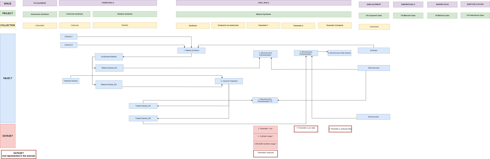

This guideline explains how to move from a conceptual research workflow
to a structured representation in the Data Store. The same approach is
used throughout the tutorial series and is illustrated with the synthetic
“Material Synthesis” example.
Purpose
Before configuring the Data Store, it is useful to develop a conceptual
model of the research workflow. This helps identify which research data,
activities, resources, and research outputs need to be represented and
how they are connected.
The “Material Synthesis” example is used throughout the
Data Store tutorials to demonstrate this process consistently. The same
research workflow is first described conceptually and is then mapped to
the Lab Notebook and Inventory using the Data Store data model.
Research workflow
Start by identifying the research data that should be stored in the Data
Store and sketching the workflow through which these data are generated.
The workflow should include:
the datasets that need to be stored;
the activities or experimental steps through which the datasets are generated;
the resources used during these activities, such as instruments, chemicals, methods, or software; and
other research outputs, such as samples or code, that are generated as part of the workflow.
The resulting research workflow provides a conceptual overview of
what you do, what you use, and what you generate. It also
helps identify the entities that need to be represented as objects in the
Data Store and the relationships between them.
Figure 1: Research workflow for the “Material Synthesis” example. The diagram helps identify the activities, resources, datasets, and other research outputs that need to be represented in the Data Store.
Back to top
Data Store data model
In the next step, map the elements identified in the research workflow to
the appropriate Data Store components: Lab Notebook (ELN),
FB Inventory, and BAM Inventory.
Objects are organized using the openBIS hierarchy:
Space → Project → Collection → Object
Recommended Data Store structure:
Starting with openBIS version 20.10.12, objects can also be registered
directly at the space or project level, providing additional flexibility
for organizing data. This can be used to create structures that resemble
nested folders in a conventional file system.
For the Data Store, however, we recommend organizing research data using
the following structure:
Space → Project → Collection → Object → Dataset
In particular, we recommend registering objects within
collections rather than using spaces or projects directly or creating
folder-like hierarchies. This approach:
provides a clear and consistent organization of objects;
keeps the left-hand Lab Notebook navigation concise and easier to use;
encourages the use of metadata and object relationships rather than
nested folder-like structures; and
supports a standardized and scalable data organization across projects
and divisions.
For most research workflows, organize objects in collections and use
parent-child relationships to connect related objects,
such as instruments, chemicals, samples, and experimental steps. This
provides a more consistent and sustainable representation of the research
workflow than creating deeply nested, folder-like structures.
In the Lab Notebook, objects representing experimental steps describe how
research data were generated, and the corresponding
datasets are attached to these objects. Resources and
research outputs that need to be referenced across research activities
can be represented as objects in the appropriate Inventory.
Related objects across the Lab Notebook and Inventory are connected using
parent-child relationships. These connections make it
possible to trace relationships between experimental steps and the
instruments, chemicals, samples, and other resources or outputs involved
in the research workflow.

Figure 2: Data Store data model for the “Material Synthesis” example. Elements identified in the research workflow are mapped to the Lab Notebook, FB Inventory, and BAM Inventory and organized using the openBIS hierarchy.
Traceability:
Objects represented across the Lab Notebook and Inventory should be connected where relationships are relevant to understanding how research data were generated. Parent-child relationships allow these connections to be followed across the Data Store.
The recommended modeling process can be summarized as follows:
Research workflow What do I do, use, and generate?
↓
Identify objects and datasets What needs to be represented in the Data Store?
↓
Map to the Data Store data model Where should each object and dataset be represented?
↓
Connect related objects How are the Lab Notebook and Inventory linked?
Following this process helps create a consistent representation of the
research workflow and improves the traceability of research data and the
resources used to generate them.